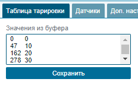
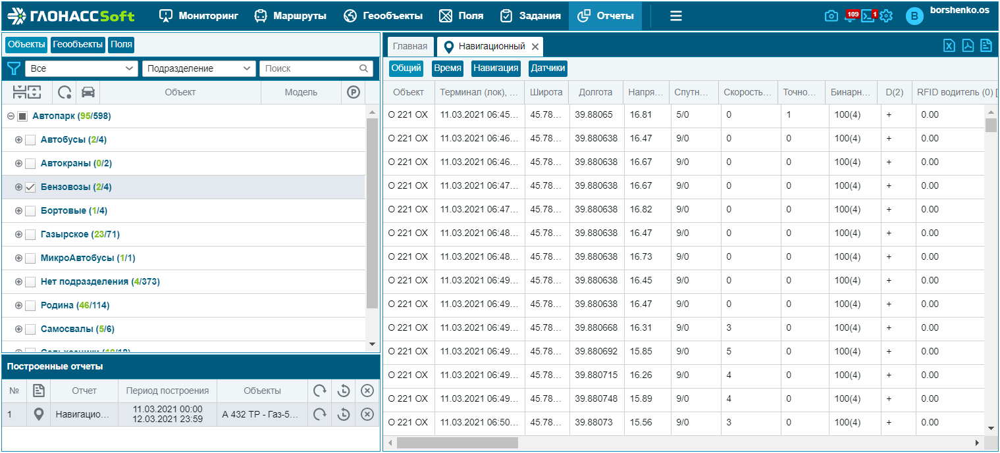

Пошаговая инструкция по работе с системой ГлонассСофт
Руководство для нового сотрудника по основным операциям в системе мониторинга
1. Создание объекта (ТС) в системе
Шаг 1: Зайти в панель управления
Откройте вкладку "Объекты" в панели управления системы ГлонассСофт.
Шаг 2: Создать новый объект
Нажмите кнопку «Добавить объект» для создания и добавления в список нового объекта мониторинга.
Шаг 3: Заполнить общую информацию
В открывшемся окне настройки объекта заполните следующие поля:
- Имя объекта – произвольное имя объекта, которое будет отображаться в системе (обычно гос. номер автомобиля);
- Модель – выберите из справочника или введите вручную модель объекта;
- Тип устройства – выберите тип установленного терминала;
- IMEI – укажите уникальный идентификационный номер терминала, установленного на объекте.
Дополнительно можно указать:
- Подразделение – выберите подразделение, в которое входит объект;
- Номера телефонов (SIM) – выберите номера установленных в терминал SIM-карт.
Шаг 4: Сохранить изменения
После заполнения всех необходимых полей нажмите кнопку "Сохранить" для создания объекта.
Совет: Если вам нужно добавить модель объекта или подразделение, которых нет в списке, нажмите на кнопку выбора и воспользуйтесь опцией "Добавить" в списке, или создайте их через панель управления во вкладке Справочники.
2. Назначение терминала
Шаг 1: Выбрать тип устройства
В карточке объекта выберите соответствующий тип терминала из выпадающего списка в поле "Тип устройства".
Шаг 2: Прописать IMEI (ID) терминала
В поле "IMEI" укажите уникальный идентификационный номер терминала. Обычно он указан на корпусе устройства или в сопроводительной документации.
Внимание! IMEI должен быть указан точно, без ошибок и пробелов. Это критически важный параметр для связи с терминалом.
Шаг 3: Проверить статус терминала
После сохранения проверьте, что терминал отправляет данные и корректно отображается в системе. Перейдите в основной интерфейс системы и убедитесь, что объект виден на карте (при наличии данных с терминала).
Примечание: При первом подключении терминала может потребоваться некоторое время для установления связи с сервером. Если через 15-20 минут данные не поступают, проверьте правильность введенного IMEI и настройки оборудования.
3. Подключение датчиков
Раздел посвящен настройке различных датчиков для объекта мониторинга: датчика уровня топлива (ДУТ), датчиков температуры и различных счетчиков.
3.1. Настройка датчика уровня топлива (ДУТ)
Шаг 1: Открыть вкладку «Датчики»
В карточке объекта откройте вкладку «Датчики».
Шаг 2: Добавить датчик
Нажмите кнопку «Добавить» для создания нового датчика.
Шаг 3: Настроить параметры датчика
В открывшемся окне настройки заполните параметры:
- Тип - выберите "Простой" для физического датчика
- Тип датчика - выберите "Уровень топлива" из категории "Топливо"
- Наименование датчика - задайте понятное название
- Тип входа - выберите тип интерфейса подключения (обычно "аналоговый" или "RS485")
- Номер входа - укажите номер входа терминала, к которому подключен датчик
- Тип тарировки - выберите "Таблица" для обычного ДУТ
Шаг 4: Настройка дополнительных параметров
При необходимости настройте дополнительные параметры:
- Отображать в подсказке - включите для показа в интерфейсе системы
- Включить медианную фильтрацию - рекомендуется для сглаживания показаний
- Цвет на графике - выберите цвет для отображения в отчётах
Важно! После создания датчика уровня топлива необходимо выполнить его тарировку для корректного определения объема топлива в баке. Процесс тарировки описан в разделе 4 данной инструкции.
3.2. Настройка датчика температуры
Шаг 1: Открыть вкладку «Датчики»
В карточке объекта откройте вкладку «Датчики».
Шаг 2: Добавить датчик
Нажмите кнопку «Добавить» для создания нового датчика.
Шаг 3: Настроить параметры датчика
В открывшемся окне настройки заполните параметры:
- Тип - выберите "Простой"
- Тип датчика - выберите "Температура двигателя" или "Температура прицепа" из категории "Показатели"
- Наименование датчика - задайте понятное название
- Тип входа - выберите тип интерфейса (обычно "аналоговый", "RS485" или "1-Wire")
- Номер входа - укажите номер входа, к которому подключен датчик
Шаг 4: Настройка отображения
Настройте дополнительные параметры:
- Отображать в подсказке - включите для показа в интерфейсе системы
- Включить медианную фильтрацию - рекомендуется включить для температурных датчиков
- Цвет на графике - выберите цвет для отображения
3.3. Настройка счетчиков
Шаг 1: Открыть вкладку «Датчики»
В карточке объекта откройте вкладку «Датчики».
Шаг 2: Добавить счетчик
Нажмите кнопку «Добавить» для создания нового датчика.
Шаг 3: Настроить параметры счетчика
В открывшемся окне настройки заполните параметры в зависимости от типа счетчика:
Для датчика пробега:
- Тип датчика - выберите "Датчик пробега" из категории "Показатели"
- Тип входа - выберите соответствующий тип
- Номер входа - укажите номер входа
- Тип тарировки - для пробега обычно используется "Накопитель"
Для топливораздачи:
- Тип датчика - выберите "Топливораздача" из категории "Топливо"
- Тип входа - выберите подходящий тип (обычно "импульсный")
- Номер входа - укажите номер входа
- Тип тарировки - для импульсных датчиков обычно "Накопитель"
Шаг 4: Дополнительные настройки
Для датчика пробега в разделе "Нормы" укажите параметр "Расчет пробега" как "по датчику пробега", если хотите использовать показания этого счетчика вместо GPS.
Важно! Для правильной работы датчика пробега необходимо создать тарировочную таблицу с точками 0:0; 9999999:9999999, чтобы избежать ошибок при расчете пробега и обнулений.
4. Внесение тарировок
Шаг 1: Открыть вкладку «Датчики»
В карточке объекта перейдите на вкладку «Датчики» и выберите датчик, для которого требуется выполнить тарировку (обычно это датчик уровня топлива).
Шаг 2: Открыть таблицу тарировки
Выберите датчик и нажмите кнопку "Редактировать" . Перейдите на вкладку "Таблица тарировки" в окне редактирования датчика.
Шаг 3: Заполнить таблицу тарировки
Добавьте в таблицу соответствия между цифровым сигналом и реальным объемом топлива. Для этого нажимайте кнопку "Добавить" и вводите пары значений.
Шаг 4: Создание дополнительных таблиц тарировки (при необходимости)
Если вам необходимо создать дополнительную таблицу тарировки (например, при замене датчика):
- Перейдите в список дополнительных таблиц тарировки в карточке датчика
- Нажмите кнопку "Добавить"
- Заполните таблицу тарировки и укажите время начала применения таблицы
- Сохраните настройки
Примечание: Дополнительные таблицы тарировки позволяют применять разные тарировки для одного датчика в разные периоды времени. Это необходимо при замене датчиков или изменении конфигурации.
Шаг 5: Сохранить изменения
После внесения всех необходимых значений в таблицу тарировки нажмите кнопку "Сохранить".
Внимание! Удалить первую или единственную таблицу тарировки без даты начала применения невозможно.
5. Создание отчетов под клиента
Шаг 1: Перейти в раздел отчетов
В главном меню выберите вкладку "Отчеты".
Шаг 2: Выбрать объекты для отчета
В области выбора объектов отметьте транспортные средства или геообъекты, для которых необходимо создать отчет.
Шаг 3: Выбрать отчетный период
Укажите временной интервал, за который требуется построить отчет, используя календарь.
Шаг 4: Выбрать тип отчета
Выберите необходимый тип отчета из доступных категорий:
Шаг 5: Настроить параметры отчета
Нажмите на кнопку "Настройка" для детальной настройки параметров выбранного отчета. Доступные настройки зависят от типа отчета.
Наиболее распространенные настройки:
- Формат отображения топлива, пробега и продолжительности
- Настройки учета топлива по суткам
- Параметры отображения превышений скорости
- Опции расчета пробега и времени между геообъектами
Шаг 6: Сформировать и сохранить отчет
Нажмите кнопку "Сформировать" для построения отчета. После формирования отчета вы можете:
Шаг 7: Сохранение отчета как шаблона (опционально)
Для создания персонализированного отчета под конкретного клиента:
- Настройте все параметры отчета под требования клиента
- Нажмите "Сохранить как шаблон"
- Введите название шаблона отчета
- В будущем вы сможете быстро формировать отчет с этими параметрами, выбрав его в разделе "Мои отчеты"
Рекомендация: Давайте шаблонам отчетов осмысленные названия, включая имя клиента и тип отчета (например, "ООО Транс - Ежемесячный отчет по топливу"). Это упростит поиск нужного отчета в будущем.
6. Настройка уведомлений
В этом разделе описывается настройка различных типов уведомлений: о событиях, превышениях и неисправностях.
6.1. Настройка уведомлений о событиях
Шаг 1: Перейти в раздел уведомлений
В главном меню выберите вкладку "Уведомления".
Шаг 2: Создать новое уведомление
Нажмите кнопку "Добавить" для создания нового уведомления.
Шаг 3: Выбрать шаблон события
В первом шаге выберите шаблон события из списка доступных шаблонов. Для уведомлений о событиях подходят следующие шаблоны:
- Сработка дискретного датчика
- Въезд и выезд из геозоны
- Сработка тревожной кнопки
Шаг 4: Выбрать объекты
Выберите объекты или группы объектов, для которых будет действовать уведомление.
Шаг 5: Выбрать геообъекты (при необходимости)
Если выбран шаблон "Въезд и выезд из геозоны", укажите геообъекты, для которых будет работать уведомление.
Шаг 6: Настроить действия
Выберите способы доставки уведомлений:
- В Telegram
- В мобильном приложении
- В web-версии
- На электронную почту
- На указанный URL (Webhook)
Шаг 7: Выбрать пользователей
Укажите пользователей, которые должны получать данные уведомления.
Шаг 8: Настроить вид уведомления
Выберите тип уведомления:
- Информационное (закрывается одной кнопкой)
- С подтверждением (требует комментария для закрытия)
При необходимости активируйте опцию "Хранить уведомления в журнале".
Шаг 9: Задать срок действия
Укажите срок действия уведомления (до 90 дней) и настройте периоды активности.
Шаг 10: Сохранить настройки
Нажмите кнопку "Сохранить" для создания уведомления.
6.2. Настройка уведомлений о превышениях
Шаг 1: Перейти в раздел уведомлений
В главном меню выберите вкладку "Уведомления".
Шаг 2: Создать новое уведомление
Нажмите кнопку "Добавить" для создания нового уведомления.
Шаг 3: Выбрать шаблон превышения
В первом шаге выберите шаблон "Превышение скорости".
Шаг 4: Настроить параметры превышения
Укажите порог скорости и минимальное время продолжительности события.
Совет: Рекомендуется устанавливать минимальное время продолжительности около 10-15 секунд, чтобы избежать ложных срабатываний при кратковременных превышениях.
Шаг 5: Выбрать объекты
Выберите объекты или группы объектов, для которых будет действовать уведомление.
Шаг 6: Настроить действия и получателей
Настройте способы доставки уведомлений и выберите пользователей, следуя шагам 6-9 из раздела 6.1.
6.3. Настройка уведомлений о неисправностях
Шаг 1: Перейти в раздел уведомлений
В главном меню выберите вкладку "Уведомления".
Шаг 2: Создать новое уведомление
Нажмите кнопку "Добавить" для создания нового уведомления.
Шаг 3: Выбрать подходящий шаблон
Для уведомлений о неисправностях выберите один из подходящих шаблонов:
- Значение аналогового датчика (для мониторинга критических показателей)
- Потеря связи (для уведомлений об отсутствии данных от терминала)
Шаг 4: Настроить параметры уведомления
В зависимости от выбранного шаблона, настройте соответствующие параметры:
- Для аналогового датчика: выберите датчик и укажите пороговые значения
- Для потери связи: укажите время, после которого считать связь потерянной
Шаг 5: Завершить настройку
Выберите объекты, настройте действия и получателей, задайте срок действия уведомления и сохраните настройки.
Рекомендация: Для уведомлений о неисправностях рекомендуется настраивать доставку по нескольким каналам (например, в web-интерфейсе и по email или в Telegram) для повышения вероятности своевременного обнаружения проблемы.
7. Создание геозон
7.1. Создание геозон вручную
Шаг 1: Перейти в раздел геообъектов
Выберите вкладку "Геообъекты" в главном меню системы.
Шаг 2: Создать новый геообъект
Нажмите кнопку "Создать новый геообъект" для перехода в режим редактирования геообъектов.
Шаг 3: Ввести название геообъекта
В разделе "Общее" введите название геообъекта в активное поле.
Шаг 4: Настроить отображение геообъекта
В разделе "Отображение" настройте параметры отображения геообъекта на карте:
- Цвет контура
- Прозрачность и толщину линии
- Цвет и прозрачность заливки
- Видимость на карте в зависимости от масштаба
Шаг 5: Нарисовать геообъект на карте
Выберите инструмент "Рисовать полигон" и отметьте точки геообъекта на карте:
Шаг 6: Настроить параметры расчета
В разделе "Расчет геособытий" настройте даты начала и окончания расчета событий для этого геообъекта. По умолчанию дата начала расчета событий устанавливается как дата создания геообъекта.
Шаг 7: Сохранить геообъект
После всех настроек нажмите кнопку "Сохранить".
Внимание! Существуют ограничения по размеру и количеству геообъектов:
- Максимальная площадь одного геообъекта: 1 млн. га
- Максимальное количество геообъектов: 5 тыс. штук
- Максимальная общая площадь всех геообъектов: 10 млн. га
При необходимости изменения этих ограничений обратитесь к своему менеджеру.
7.2. Создание геозон по шаблону (импорт)
Шаг 1: Перейти в раздел геообъектов
Выберите вкладку "Геообъекты" в главном меню системы.
Шаг 2: Открыть мастер импорта
Нажмите на кнопку "Экспорт/Импорт" для открытия мастера загрузки файлов геообъектов.
Шаг 3: Выбрать файл для импорта
В мастере загрузки выберите файл с геообъектами. Поддерживаемые форматы:
- KML
- KMZ
- CSV
- ShapeFile
- MapInfo
Шаг 4: Настроить параметры отображения
В мастере настройте стилистические параметры импортируемых геообъектов:
- Цвет
- Заливка
- Толщина линий
Шаг 5: Проверить параметры импорта
На финальном шаге проверьте данные о таких параметрах как:
- Проекция
- Кодировка
- Площадь загружаемых геообъектов
При необходимости укажите ширину и радиус геообъекта.
Шаг 6: Завершить импорт
Нажмите кнопку "Завершить" или "Импортировать", чтобы создать геообъекты на основе импортированных данных.
Примечание: При импорте дата начала/дата завершения устанавливается датой создания. Перерасчет назад запускается только после создания поля, после редактирования не запускается.
8. Настройка ретрансляции
Шаг 1: Открыть вкладку «Ретрансляция»
В панели управления перейдите на вкладку «Ретрансляция».
Шаг 2: Создать новый ретранслятор
Нажмите кнопку «Добавить ретранслятор».
Шаг 3: Заполнить параметры ретранслятора
Заполните следующие поля:
Шаг 4: Выбрать объекты для ретрансляции
После выбора подписчика в таблице Все объекты отобразятся объекты данного клиента. Переместите нужные объекты в правую таблицу Объекты для ретрансляции.
Шаг 5: Настроить параметры объектов (при необходимости)
При необходимости вы можете изменить IMEI объектов в ретранслируемых данных:
- Добавьте объект в поле для ретрансляции
- Дважды кликните на IMEI объекта
- Измените номер на требуемый
Для массового изменения IMEI у нескольких объектов:
- Выделите нужные объекты
- Внизу таблицы впишите длину символов, которую необходимо оставить
- В поле "Префикс" укажите необходимые цифры, которые должны быть написаны перед IMEI
Шаг 6: Сохранить настройки
После заполнения всех параметров нажмите кнопку "Сохранить" для создания ретранслятора.
Шаг 7: Мониторинг и управление
После создания ретранслятора вы можете
получать информацию по переданным сообщениям по объектам

Внимание! Ретрансляция может быть автоматически заблокирована при следующих условиях:
- Устройство блокируется на 10 минут после пяти неуспешных попыток передачи данных
- При неуспешной авторизации устройство автоматически отключается из ретрансляции
- Если удаленный сервер недоступен в течение 8 часов, ретрансляция полностью отключается
Важно! Для хостинга ГЛОНАССсофт, расположенного в ДЦ1 (hosting.glonasssoft.ru), ретрансляция осуществляется с определенных IP-адресов. При необходимости добавьте эти адреса в белый список исключений на серверах, куда будут ретранслироваться данные.